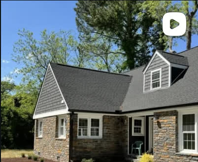
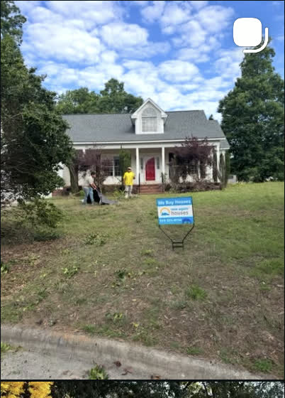
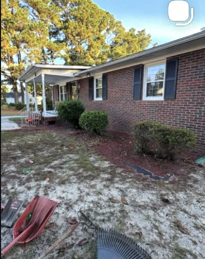

Driveways • Landscaping • Hardscaping
Brought Back to Life
Our Approach
Every yard has good bones — it just needs the right hands to bring them out.
Wizard Works handles the outdoor work that actually transforms a property: driveways poured right, hardscaping that's built to last, and landscaping that gets maintained, not just installed. Commercial or residential, we treat every yard like it's the one we'll be back to next season.
See The Difference
Drag To Compare
Real yard, real transformation — drag the slider to see it for yourself.
Recent Work
A Few Recent Transformations
A sample of completed projects from around the area.
Services
What We Do
Three services, one crew — so the outside of your property gets treated as one connected job, not three separate ones.

Driveways
Concrete and gravel driveways poured, graded, and finished to hold up under real use — not just look good on install day.
Get a Quote →
Landscaping
Bed design, mulching, trimming, and seasonal cleanup — the ongoing care that keeps a property looking sharp all year, not just after install.
Get a Quote →
Hardscaping
Retaining walls, walkways, and outdoor living spaces — the structural work that gives a landscape its shape and holds it there.
Get a Quote →About Wizard Works
Local Crew.
Honest Work.
We started Wizard Works on a simple bet: most properties don't need replacing, they need well-built outdoor space. Solid concrete, a landscape that's actually maintained, and hardscaping that holds up — that's still the whole job today, just at a bigger scale.
Get Started
Let's Build
Something Better
Tell us about your property and we'll put together a free, no-pressure estimate — usually within one business day.
Serving Raleigh, NC and surrounding Wake, Harnett, Johnston, Sampson, Duplin, Wayne, Cumberland & Bladen Counties.